4 Gitlab 自动化测试集成
1 CI工具链集成-自动化测试
- Jmeter接口测试简介
- GitlabCI集成自动化测试
接口测试简介
- jmeter运行接口测试
- ant + jmetert批量接口测试
- 集成CI自动化测试
- 展示测试报告
接口测试
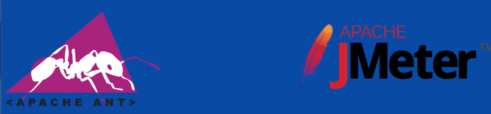
接口
- 接口测试定义为一种软件测试类型，用于验证两个不同软件系统之问的通信是否正确完成
- 集成两个组件的连接称为接口。计算机世界中的此接口可以是API，Web服务等之类的东西。这些连接服务或接口的测试称为接口测试
- 接口实际上是由一组命令，消息和其他允许设备与用户之问进行通信的属性组成的软件。
jmeter
- wget
- tar zxf
- export
- source
Jmeter接口测试
# jmeter
=============================================
Don't use GUI mode for load testing !, only for Test creation and Test debugging.
For load testing, use CLI Mode (was NON GUI):
jmeter -n -t Ljmx file] -1 [results file] -e -o [Path to web report folder]
& increase Java Heap to meet your test requirements:
Modify current env variable HEAP="-Xms1g
-Xmx1g -XX:MaxMetaspaceSize=256m" in the jmeter batch file
Check: https://jmeter.apache.org/usermanual/best-practices.html
=============================================
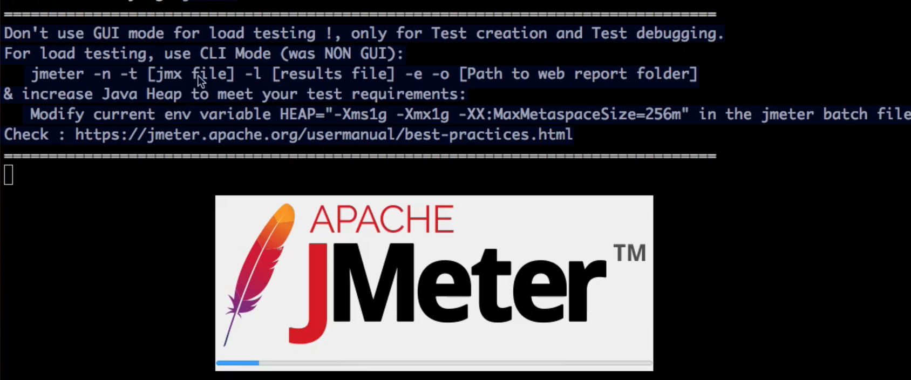
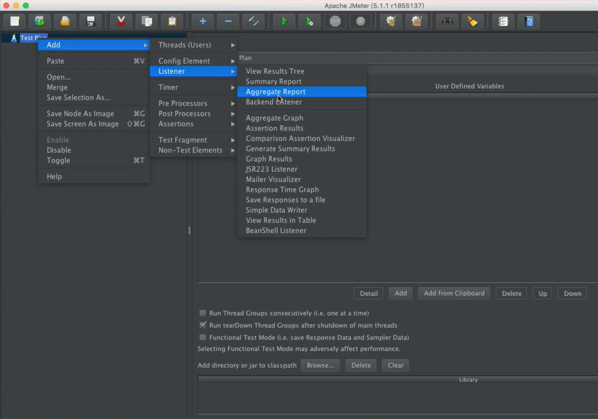
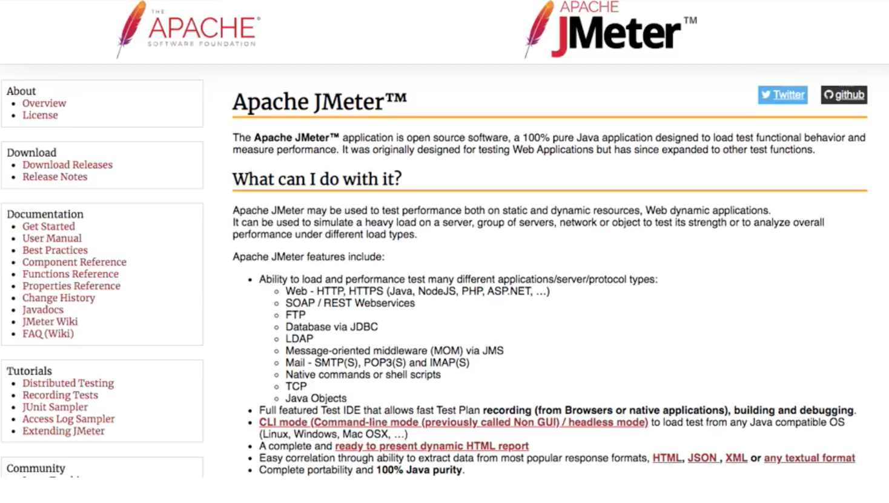
GUI模式运行测试用例
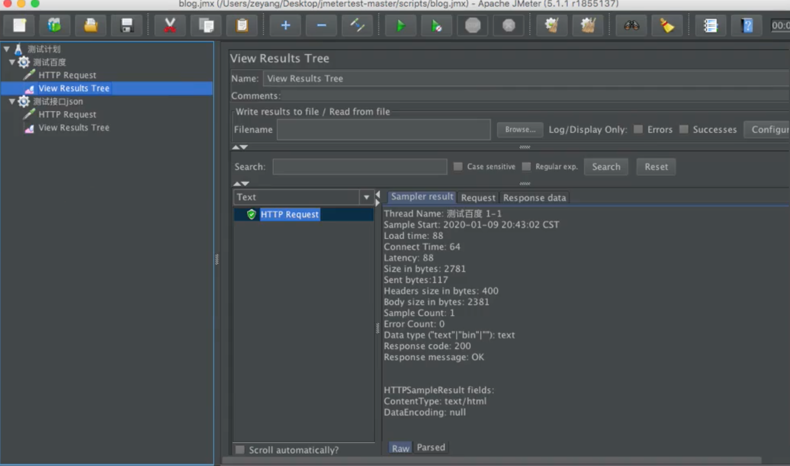
非GUI模式运行测试用例
参数说明：
-n：非GUI模式执行JMeter-t：执行测试文件所在的位置-l: 指定生成测试结果的保存文件，jtl文件格式-e：测试结束后，生成测试报告-o：指定测试报告的存放位置
Error in NonGUIDriver
java. lang. IllegalArgumentException:
Report generation requires csv output
format, check
`jmeter. save. saveservice. output.format` property
jmeter -n -t scripts/blog.jmx -l report.jtl -e -o report -J jmeter.save.saveservice.output_format=csv
Example gitlabci-cidevops-interfacetest-service
$ tree gitlabci-cidevops-interfacetest-service
gitlabci-cidevops-interfacetest-service
├── README.md
├── build.xml
├── jmeter-results-detail-report_21.xsl
├── jmeter.results.shanhe.me.xsl
├── result
└── scripts
└── testbaidu.jmx
2 directories, 5 files
jmeter -n -t testbaidu. jmx -l report.jtl -e -o report -Jjmeter.save.saveservice.output_format=csv
Creating summariser <summary>
Created the tree successfully using testbaidu.jmx
Starting the test @ Sat May 09 15:08:34 CST 2020 (1589008114686)
Waiting for possible Shutdown/StopTestNow/HeapDump/ThreadDumpmessage on port 4445
Started: 2 Finished: 0
Started: 2 Finished: 2
Tidying up... @ Sat May 09 15:08:35 CST 2020 (1589008115639)
... end of run
2 Ant + Jmeter自动化测试
Build. xmI解析
<?xml version="1.0" encoding="utf8"?>
<!-- 拷贝报告所需的图片资源至目标目录 -->
<project name="ant-jmeter-test" default="run" basedir=".">
<tstamp>
<format property="time" pattern="yyyyMMddHHmm" />
</tstamp>
<!-- 需要改成自己本地的jmeter目录-->
<property name="jmeter.home" value="/usr/local/apache-jmeter-5.1.1" />
<!-- jmeter生成的jtl格式的结果报告的路径-->
<property name="jmeter.result.jtl.dir" value="./result/jtlfile" />
<!-- jmeter生成的html格式的结果报告的路径-->
<property name="jmeter.result.html.dir" value="./result/htmlfile" />
<!-- ʺ生成的报告的前缀-->
<property name="ReportName" value="TestReport_" />
<property name="jmeter.result.jtlName" value="${jmeter.result.jtl.dir}/${ReportName}${time}.jtl" />
<property name="jmeter.result.htmlName" value="${jmeter.result.html.dir}/SummaryReport.html" />
<property name="jmeter.detail.result.jtlName" value="${jmeter.result.jtl.dir}/${ReportName}${time}.jtl" />
<property name="jmeter.detail.result.htmlName" value="${jmeter.result.html.dir}/DetailReport.html" />
<target name="run">
<antcall target="test" />
<antcall target="report" />
</target>
<target name="test">
<taskdef name="jmeter" classname="org.programmerplanet.ant.taskdefs.jmeter.JMeterTask" />
<jmeter jmeterhome="${jmeter.home}" resultlog="${jmeter.result.jtlName}">
<!-- 声明要运行的脚本“*.jmx”指包含此目录下的所有jmeter脚本-->
<testplans dir="./scripts" includes="*.jmx" />
<property name="jmeter.save.saveservice.output_format" value="xml"/>
</jmeter>
</target>
<path id="xslt.classpath">
<fileset dir="${jmeter.home}/lib" includes="xalan*.jar"/>
<fileset dir="${jmeter.home}/lib" includes="serializer*.jar"/>
</path>
<target name="report">
<tstamp>
<format property="report.datestamp" pattern="yyyy/MM/dd HH:mm" />
</tstamp>
<xslt
classpathref="xslt.classpath"
force="true"
in="${jmeter.detail.result.jtlName}"
out="${jmeter.detail.result.htmlName}"
style="./jmeter.results.shanhe.me.xsl">
<param name="dateReport" expression="${report.datestamp}"/>
</xslt>
<xslt
classpathref="xslt.classpath"
force="true"
in="${jmeter.result.jtlName}"
out="${jmeter.result.htmlName}"
style="./jmeter-results-detail-report_21.xsl">
<param name="dateReport" expression="${report.datestamp}"/>
</xslt>
<!-- 拷贝报告所需的图片资源至目标目录 -->
<copy todir="${jmeter.result.html.dir}">
<fileset dir="${jmeter.home}/extras">
<include name="collapse.png" />
<include name="expand.png" />
</fileset>
</copy>
</target>
</project>
ant -v
Apache Ant(M) version 1.9.14 compiled on March 12 2019
$ ant-f build.xml
...
<h1 id="toc_0"><strong>4 Gitlab 自动化测试集成</strong></h1>
<h2 id="toc_1"><strong>1 CI工具链集成-自动化测试</strong></h2>
<ul>
<li>Jmeter接口测试简介</li>
<li>GitlabCI集成自动化测试</li>
</ul>
<blockquote>
<p>接口测试简介</p>
</blockquote>
<ul>
<li>jmeter运行接口测试</li>
<li>ant + jmetert批量接口测试</li>
<li>集成CI自动化测试</li>
<li>展示测试报告</li>
</ul>
<h3 id="toc_2"><strong>接口测试</strong></h3>
<p><img src="../images/chap4_4_1.png" alt="Alt Image Text" title="Body image"></p>
<p><strong>接口</strong></p>
<ul>
<li>接口测试定义为一种软件测试类型，用于验证两个不同软件系统之问的通信是否正确完成</li>
<li>集成两个组件的连接称为接口。<strong>计算机世界中的此接口可以是API，Web服务等之类的东西。这些连接服务或接口的测试称为接口测试</strong></li>
<li><strong>接口实际上是由一组命令，消息和其他允许设备与用户之问进行通信的属性组成的软件</strong>。</li>
</ul>
<h3 id="toc_3">jmeter</h3>
<ul>
<li>wget</li>
<li>tar zxf</li>
<li>export</li>
<li>source</li>
</ul>
<h3 id="toc_4"><strong>Jmeter接口测试</strong></h3>
<div><pre><code class="language-none"># jmeter
=============================================
Don't use GUI mode for load testing !, only for Test creation and Test debugging.
For load testing, use CLI Mode (was NON GUI):
jmeter -n -t Ljmx file] -1 [results file] -e -o [Path to web report folder]
& increase Java Heap to meet your test requirements:
Modify current env variable HEAP="-Xms1g
-Xmx1g -XX:MaxMetaspaceSize=256m" in the jmeter batch file
Check: https://jmeter.apache.org/usermanual/best-practices.html
=============================================</code></pre></div>
<p><img src="../images/chap4_4_2.png" alt="Alt Image Text" title="Body image"></p>
<p><img src="../images/chap4_4_3.png" alt="Alt Image Text" title="Body image"></p>
<p><img src="../images/chap4_4_4.png" alt="Alt Image Text" title="Body image"></p>
<p><strong>GUI模式运行测试用例</strong></p>
<p><img src="../images/chap4_4_5.png" alt="Alt Image Text" title="Body image"></p>
<p><strong>非GUI模式运行测试用例</strong></p>
<p>参数说明：</p>
<ul>
<li><code>-n</code>：非GUI模式执行JMeter</li>
<li><code>-t</code>：执行测试文件所在的位置</li>
<li><code>-l</code>: 指定生成测试结果的保存文件，jtl文件格式</li>
<li><code>-e</code>：测试结束后，生成测试报告</li>
<li><code>-o</code>：指定测试报告的存放位置</li>
</ul>
<div><pre><code class="language-none">Error in NonGUIDriver
java. lang. IllegalArgumentException:
Report generation requires csv output
format, check
`jmeter. save. saveservice. output.format` property</code></pre></div>
<div><pre><code class="language-none">jmeter -n -t scripts/blog.jmx -l report.jtl -e -o report -J jmeter.save.saveservice.output_format=csv</code></pre></div>
<p><strong>Example</strong> <a href="https://github.com/zeyangli/gitlabci-cidevops-interfacetest-service">gitlabci-cidevops-interfacetest-service</a></p>
<div><pre><code class="language-none">$ tree gitlabci-cidevops-interfacetest-service
gitlabci-cidevops-interfacetest-service
├── README.md
├── build.xml
├── jmeter-results-detail-report_21.xsl
├── jmeter.results.shanhe.me.xsl
├── result
└── scripts
└── testbaidu.jmx
2 directories, 5 files</code></pre></div>
<div><pre><code class="language-none"> jmeter -n -t testbaidu. jmx -l report.jtl -e -o report -Jjmeter.save.saveservice.output_format=csv
Creating summariser <summary>
Created the tree successfully using testbaidu.jmx
Starting the test @ Sat May 09 15:08:34 CST 2020 (1589008114686)
Waiting for possible Shutdown/StopTestNow/HeapDump/ThreadDumpmessage on port 4445
Started: 2 Finished: 0
Started: 2 Finished: 2
Tidying up... @ Sat May 09 15:08:35 CST 2020 (1589008115639)
... end of run</code></pre></div>
<h2 id="toc_5"><strong>2 Ant + Jmeter自动化测试</strong></h2>
<p><strong><code>Build. xmI</code>解析</strong></p>
<div><pre><code class="language-none"><?xml version="1.0" encoding="utf8"?>
<!-- 拷贝报告所需的图片资源至目标目录 -->
<project name="ant-jmeter-test" default="run" basedir=".">
<tstamp>
<format property="time" pattern="yyyyMMddHHmm" />
</tstamp>
<!-- 需要改成自己本地的jmeter目录-->
<property name="jmeter.home" value="/usr/local/apache-jmeter-5.1.1" />
<!-- jmeter生成的jtl格式的结果报告的路径-->
<property name="jmeter.result.jtl.dir" value="./result/jtlfile" />
<!-- jmeter生成的html格式的结果报告的路径-->
<property name="jmeter.result.html.dir" value="./result/htmlfile" />
<!-- ʺ生成的报告的前缀-->
<property name="ReportName" value="TestReport_" />
<property name="jmeter.result.jtlName" value="${jmeter.result.jtl.dir}/${ReportName}${time}.jtl" />
<property name="jmeter.result.htmlName" value="${jmeter.result.html.dir}/SummaryReport.html" />
<property name="jmeter.detail.result.jtlName" value="${jmeter.result.jtl.dir}/${ReportName}${time}.jtl" />
<property name="jmeter.detail.result.htmlName" value="${jmeter.result.html.dir}/DetailReport.html" />
<target name="run">
<antcall target="test" />
<antcall target="report" />
</target>
<target name="test">
<taskdef name="jmeter" classname="org.programmerplanet.ant.taskdefs.jmeter.JMeterTask" />
<jmeter jmeterhome="${jmeter.home}" resultlog="${jmeter.result.jtlName}">
<!-- 声明要运行的脚本“*.jmx”指包含此目录下的所有jmeter脚本-->
<testplans dir="./scripts" includes="*.jmx" />
<property name="jmeter.save.saveservice.output_format" value="xml"/>
</jmeter>
</target>
<path id="xslt.classpath">
<fileset dir="${jmeter.home}/lib" includes="xalan*.jar"/>
<fileset dir="${jmeter.home}/lib" includes="serializer*.jar"/>
</path>
<target name="report">
<tstamp>
<format property="report.datestamp" pattern="yyyy/MM/dd HH:mm" />
</tstamp>
<xslt
classpathref="xslt.classpath"
force="true"
in="${jmeter.detail.result.jtlName}"
out="${jmeter.detail.result.htmlName}"
style="./jmeter.results.shanhe.me.xsl">
<param name="dateReport" expression="${report.datestamp}"/>
</xslt>
<xslt
classpathref="xslt.classpath"
force="true"
in="${jmeter.result.jtlName}"
out="${jmeter.result.htmlName}"
style="./jmeter-results-detail-report_21.xsl">
<param name="dateReport" expression="${report.datestamp}"/>
</xslt>
<!-- 拷贝报告所需的图片资源至目标目录 -->
<copy todir="${jmeter.result.html.dir}">
<fileset dir="${jmeter.home}/extras">
<include name="collapse.png" />
<include name="expand.png" />
</fileset>
</copy>
</target>
</project></code></pre></div>
<div><pre><code class="language-none">
运行ant测试
ant -v
Apache Ant(M) version 1.9.14 compiled on March 12 2019
$ ant -f build.xml
...
BUILD SUCCESSFUL
Total time: 5 seconds
测试报告
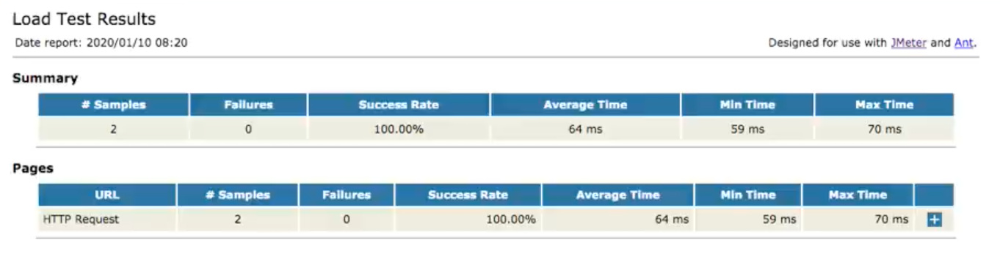
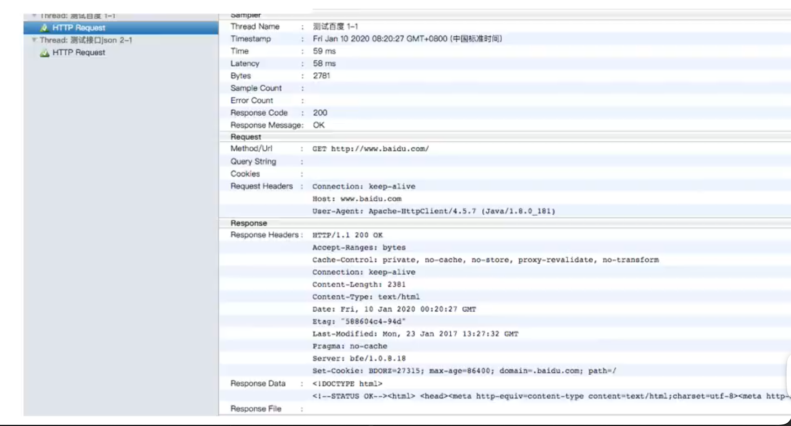
非GUI模式运行测试用例
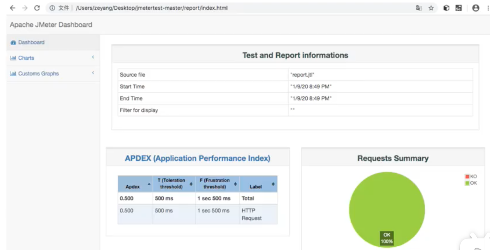
自动化测试集成
开启gitlab pages for project gitlabci-cidevops-interfacetest-service
vim /etc/gitlab/gitlab.rb
##! Define to enable GitLab Pages
pages_external_url = "http://pages.gitlab.com/"
gitlab_pages['enable' ] = true
gitlab_pages[ 'inplace_chroot'] = true
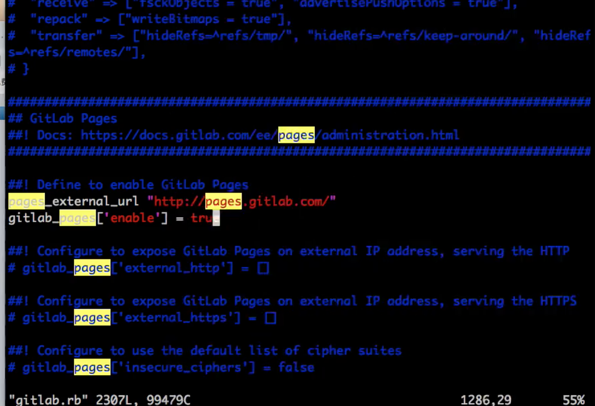
gitlab-ctl reconfigure
更新gitlab.ymI文件
containers:
- name: gitlab
image: qitlab/qitlab-ce:12.9.0-ce.0
imagePullPolicy: IfNotPresent
ports:
- containerPort: 30088
name: web
protocol: TCP
- containerPort: 22
name: agent
protocol: TCP
- containerPort: 80
name: page
protocol: TCP
开放80端口
---
apiVersion: v1
kind: Service
metadata:
name: gitlab
namespace: devops
labels:
name: gitlab
spec:
ports:
- name: http
port: 80
targetPort: http
nodePort: 32220
- name: ssh
port: 22
targetPort: ssh
nodePort: 30022
- name: page
port: 80
targetPort: 80
nodePort: 30022
type: NodePort
selector:
name: gitlab
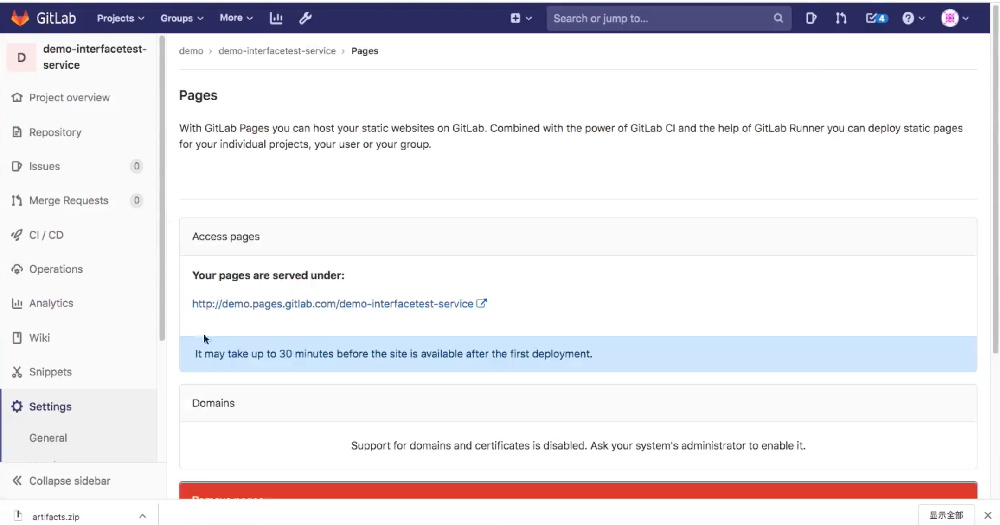
.gitlab-ci.yaml
stages:
- tests
- deploy
interface_test:
stage: tests
tags:
- build
script:
- ant -Djmeter.home=/usr/local/buildtools/apache-jmeter-5.2.1
artifacts:
paths:
- result/htmlfile/
pages:
stage: deploy
dependencies:
- interface_test
script:
- mv result/htmlfile/ public/
artifacts:
paths:
- public
expire_in: 30 days
only:
- master
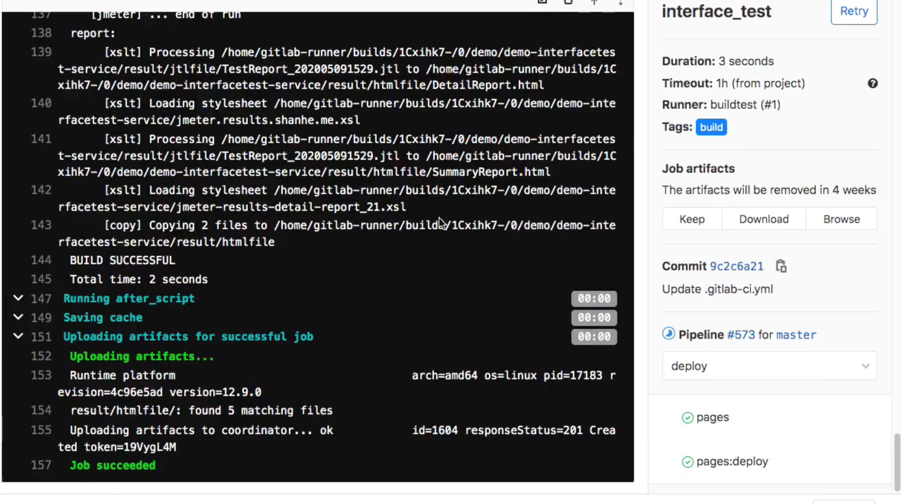
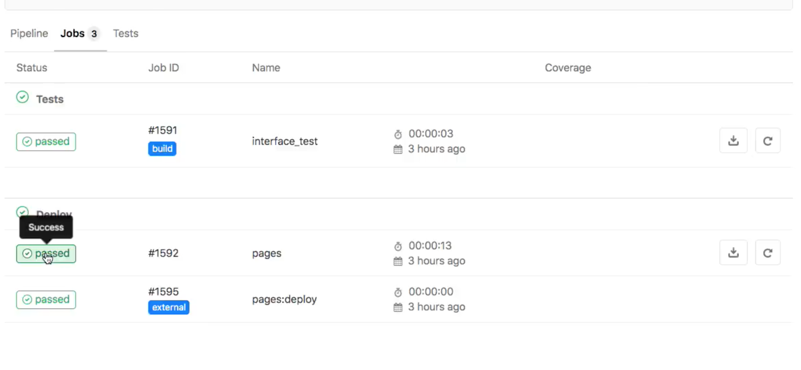
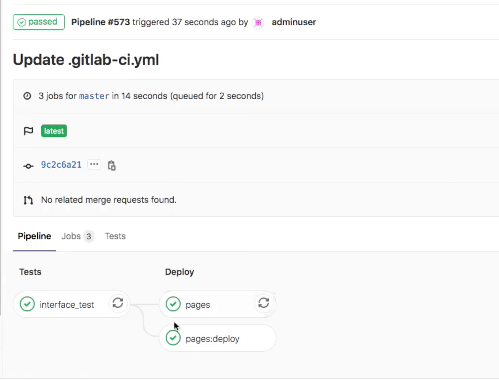
成果展示
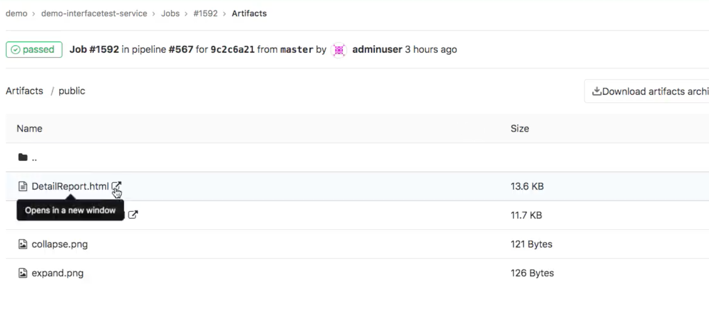

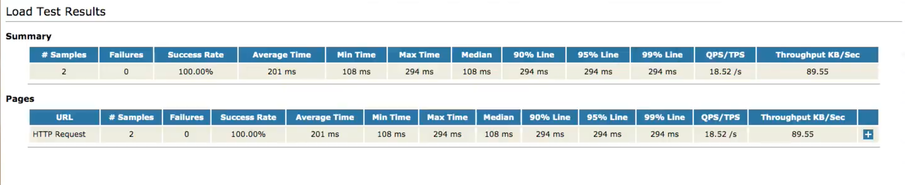
3 上下游项目触发自动化测试
gitlabci-templates/jobs/test.yml
#单元测试
.test:
stage: test
tags:
- build
script:
- $TEST_SHELL
- ls
artifacts:
reports:
junit: ${JUNIT_REPORT_PATH}
.interfacetest:
stage: interface_test
trigger:
project: cidevops/cidevops-interfacetest-service
branch: master
strategy: depend
cidevops-java-service/templates/java-pipeline.yml
nclude:
- project: 'cidevops/cidevops-gitlabci-service'
ref: master
file: 'jobs/build.yml'
- project: 'cidevops/cidevops-gitlabci-service'
ref: master
file: 'jobs/test.yml'
- project: 'cidevops/cidevops-gitlabci-service'
ref: master
file: 'jobs/codeanalysis.yml'
variables:
BUILD_SHELL: 'mvn clean package -DskipTests' ##构建命令
CACHE_DIR: 'target/'
TEST_SHELL : 'mvn test' ##测试命令
JUNIT_REPORT_PATH: 'target/surefire-reports/TEST-*.xml' ##单元测试报告
# 代码扫描
SCANNER_HOME : "/usr/local/buildtools/sonar-scanner-3.2.0.1227-linux"
SCAN_DIR : "src"
ARTIFACT_PATH : 'target/*.jar' ##制品目录
#上传制品库
ARTIFACTORY_URL: "http://192.168.1.200:30082/artifactory"
ARTIFACTORY_NAME: "cidevops"
TARGET_FILE_PATH: "$CI_PROJECT_NAMESPACE/$CI_PROJECT_NAME/$CI_COMMIT_REF_NAME-$CI_COMMIT_SHORT_SHA-$CI_PIPELINE_ID"
TARGET_ARTIFACT_NAME: "$CI_PROJECT_NAME-$CI_COMMIT_REF_NAME-$CI_COMMIT_SHORT_SHA-$CI_PIPELINE_ID.jar"
cache:
paths:
- ${CACHE_DIR}
stages:
- build
- test
- parallel01
- down_artifact
- interface_test
build:
stage: build
extends: .build
rules:
- when: on_success
test:
stage: test
extends: .test
rules:
- when: on_success
code_analysis:
stage: parallel01
extends: .codeanalysis-java
codeanalysis_mr:
stage: parallel01
extends: .codeanalysis-mr
deploy_artifact:
stage: parallel01
extends: .deploy-artifact
down_artifact:
stage: down_artifact
extends: .down-artifact
interfact_test:
stage: interface_test
extends: .interfacetest
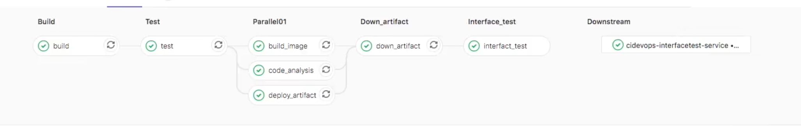
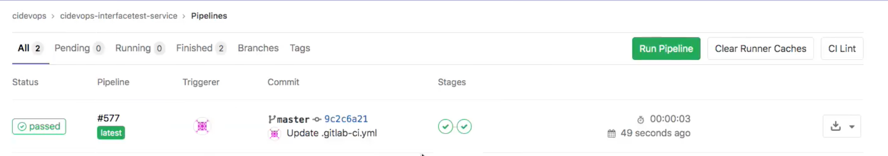
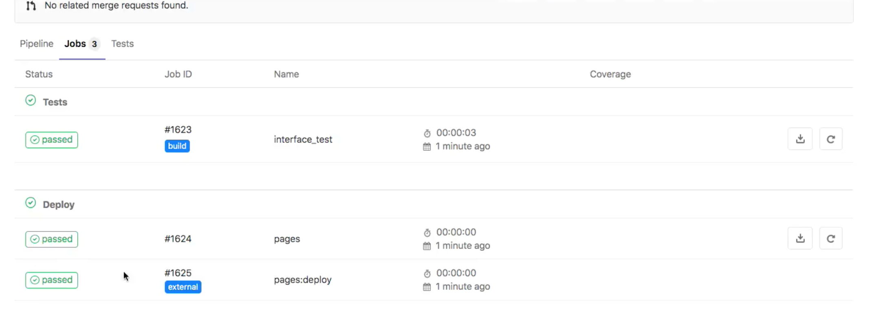
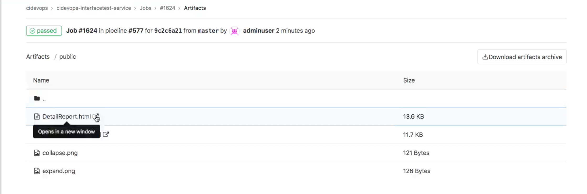